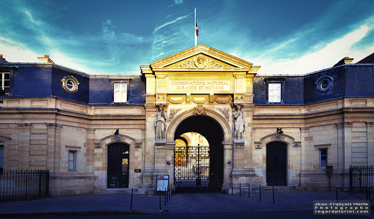
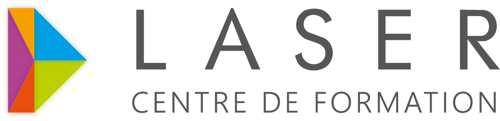
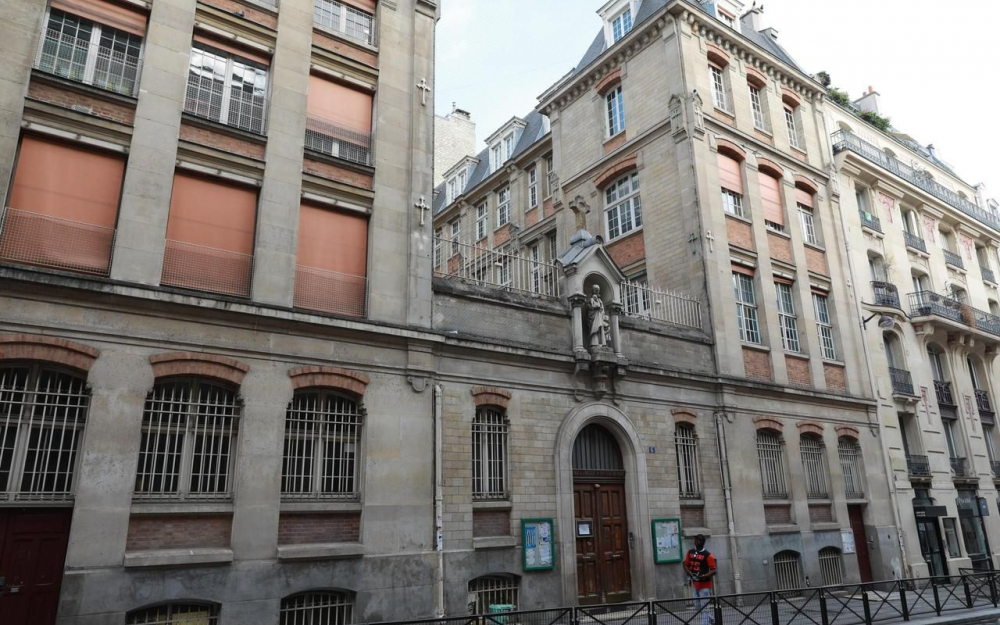
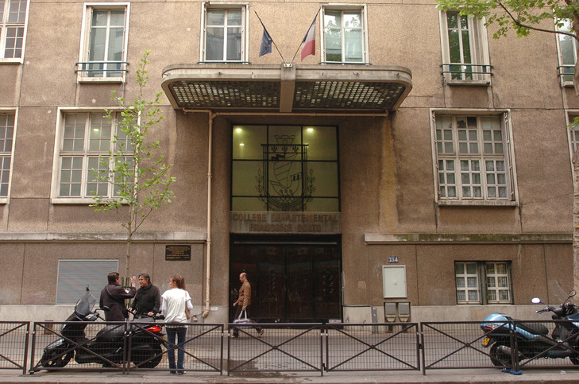

FORMATION
Pass Pro Numérique
Actuellement en formation Passe Numérique option intégrateur web de niveau 4 pour une durée de 6 mois du 10 décembre 2018 au 21 juin 2019 cette formation a pour but de nous apprendre plus la partie numérique de l'informatique comme la création d'application web ou de site et aussi les fondamentaux en HTML CSS et JAVA SCRIPT et bien sur tout cela et accompagner d'un stage de 6 semaines en entreprise.
- 
PSSIN
Formation PSSIN ( Parcour Sécurisé des Systèmes Informatiques et Numérique ) d'une durée de 4 mois de février 2018 a mai 2018 cette formation a réellement confirmé mon intéret pour l'informatique c'est la ou tout a commencer , j'y ai appris vraiment les bases de l'informatique comme le formatage , installation d'outils bureautique , montage démontage d'une tour et création de site web sur Wordpress et accompagné par un stage de 4 semaines en entreprise.
- 
Lycée Saint Vincent de Paul
Lycée Saint Vincent de Paul j'y ai préparé un bac pro SPVL ( Service de Proximité et Vie Local ) de septembre 2015 a juin 2018.
- 
Collège Francois Dolto
Collège Francois Dolto de septembre 2011 a juin 2015 , j'ai obtenue mon brevet des collège
- 